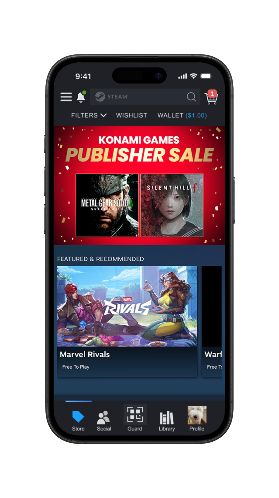
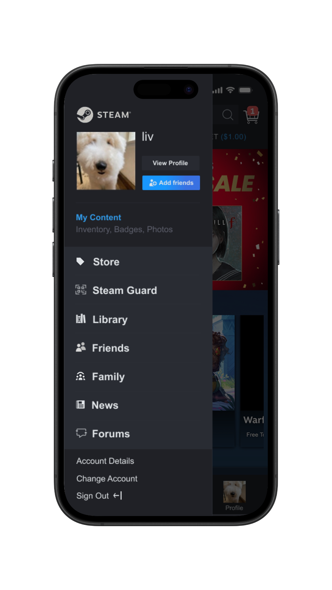

The Steam mobile app suffers from a significant disconnect between its information architecture and standard mobile user expectations. It struggles to balance being a storefront, a social platform, and a news hub, resulting in a "guessing game" for users. High-value features are often buried under vague labels like "Community," leading to low discoverability and high cognitive load.
LIVIANNE
/ Steam

Steam Navigation
Redesign
Working with a team of two others, I redesigned the Steam mobile app to fix a navigation system that often felt like a guessing game for users. We replaced Steam's disorganized layout with a hybrid design that pairs a familiar bottom navigation bar for daily tasks with a centralized profile hub for deeper account features like Steam Families. By following standard mobile design rules, we were able to cut down on mental effort and make it much faster for users to find their friends and games.
View the prototypeTeam
Livianne Lead Product Designer
Magnolia UX Researcher & Strategist
Valerie UX Researcher & Documentarian
Tools
Figma
Timeline
November 2025 - December 2025
Problem Statement
Research & Pain Points
Through our primary user testing, we identified several critical pain points:
- Low Discoverability: Users consistently looked for "Family Management" in the wrong menus.
- Poor Information Trail: Unclear labeling led users down the wrong "breadcrumb trails".
- Violated Platform Standards: Crucial tools like search filters were hidden.
- High Cognitive Load: New users felt overwhelmed by information density.
Prototype B: The Centralized Hub


The Solution
Ultimately, we chose to combine the strongest elements of both layouts. By merging these concepts, we created a design that allows both approaches to shine:
- Predictability: High-frequency social and shopping actions (Library, Friends, Store) are via a standard bottom bar.
- Efficiency: Complex account management is consolidated into a streamlined profile hub.
Final Version


Lessons Learned
This project really put into perspective how important it is to distinguish between mobile and desktop experiences; you can't simply move desktop features into a mobile layout and expect a smooth user journey.
For the Curious
Visual comparison between our redesign and the original Steam app.
Original App
Our Redesign

Vague icons and buried menus were replaced with a labeled bottom navigation bar.